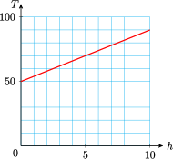
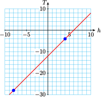
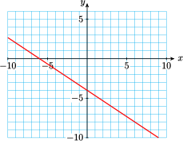
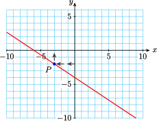
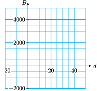
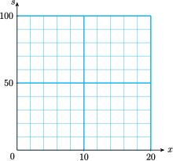
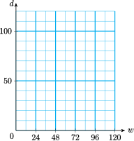

Section 2.3 Graphs of Linear Equations
¶Subsection Graphing Equations
An equation of the form \(y=ax+b\text{,}\) where \(a\) and \(b\) are constants, is called a linear equation because its graph is a straight line.
We can graph a linear equation by evaluating the expression \(ax+b\) at several values of \(x\) and then plotting points.
Example 2.18.
At 6 am the temperature was \(50 \degree\text{,}\) and it has been rising by \(4 \degree\) every hour.
- Write an equation for the temperature, \(T\text{,}\) after \(h\) hours.
- Graph your equation.
- We set \(h=0\) at 6 am. At that time, \(T=50\text{.}\) Because the temperature is rising by \(4 \degree\) every hour, we multiply the number of hours by 4 and add the result to 50 to get the new temperature. Thus, our equation is \(T=50+4h\text{.}\)
-
Step 1: We make a table of values for the equation. We choose some values for \(h\text{,}\) as shown in the first column of the table below. For each value of \(h\text{,}\) we evaluate the formula for \(T\text{,}\) and we record these values in the second column of the table.
\(h\) \(T\) \(\hphantom{000}\) \(\hphantom{00}\) Ordered pairs \(0\) \(50\) \(T=50+4(\alert{0})=50+0=50\) \((0,50)\) \(1\) \(50\) \(T=50+4(\alert{1})=50+4=54\) \((1,54)\) \(3\) \(62\) \(T=50+4(\alert{3})=50+12=62\) \((3,62)\) \(5\) \(70\) \(T=50+5(\alert{0})=50+20=70\) \((5,70)\) Step 2: We use the values in the table to help us choose scales for the axes. For this graph, the input values are less than 10, but the largest output value is 70. We use increments of 1 on the horizontal or \(h\)-axis and increments of 10 on the vertical or \(T\)-axis.
Step 3: Each ordered pair gives us a point on the graph. We plot the points on the grid and connect them with a smooth curve. All the points should lie on a straight line.

Subsubsection Reading Questions
1.
A linear equation has the form .
2.
We use to help us choose scales for the axes.
the values in the table
Subsection Cartesian Coordinate System
Many graphs include negative values as well as positive values. To make such a graph, we construct a Cartesian coordinate system, named after the French mathematician and philosopher René Descartes.
We draw two perpendicular number lines for the horizontal and vertical axes. The two axes divide the plane into four quadrants, or regions, as shown at right. We often use \(x\) for the input variable and \(y\) for the output variable, so the horizontal axis is called the \(x\)-axis and the vertical axis is the \(y\)-axis. The axes intersect at the zero point of each number line. The coordinates of this intersection point, called the origin, are \((0,0)\text{.}\)
Subsubsection Reading Questions
3.
What are the coordinates of the origin?
4.
True or False: The \(x\)-coordinate of any point on the \(y\)-axis is zero.
True
Example 2.19.
The figure at right shows how to plot points on a Cartesian grid. Points in the upper right quadrant have both coordinates positive. Points with negative \(x\)-coordinates are plotted to the left of the \(x\)-axis, and points with negative \(y\)-coordinates are plotted below the \(y\)-axis.
For example, the point \((-2,1)\) is plotted 2 units to the left of the \(x\)-axis and 1 unit above the \(y\)-axis. In which quadrant are both coordinates negative?
Subsubsection Reading Questions
5.
True or False: The notation \((5,3)\) represents two points, one on the \(x\)-axis and one on the \(y\)-axis.
6.
True or False: If both coordinates of a point are negative, the point is located in the lower left quadrant.
True
Now we can graph an equation that includes negative values.
Example 2.20.
The temperature in Nome was \(-12 \degree\)F at noon. It has been rising at a rate of \(2 \degree\)F per hour all day.
- Write an equation for the temperature, \(T\text{,}\) after \(h\) hours.
- Fill in the table and graph your equation. (Negative values of \(h\) represent hours before noon.) Use your graph to answer the following questions:
\(h\) \(-3\) \(-2\) \(-1\) \(0\) \(1\) \(2\) \(3\) \(T\) \(\hphantom{0000}\) \(\hphantom{0000}\) \(\hphantom{0000}\) \(\hphantom{0000}\) \(\hphantom{0000}\) \(\hphantom{0000}\) \(\hphantom{0000}\) - What was the temperature 8 hours before noon?
- When will the temperature reach \(-12 \degree\)F?
- The temperature at \(h\) hours after noon is given by \(T=-12+2h\text{.}\)
- We evaluate the expression for \(T\) at each of the \(h\)-values in the table.
\(h\) \(-3\) \(-2\) \(-1\) \(0\) \(1\) \(2\) \(3\) \(T\) \(-18\) \(-16\) \(-14\) \(-12\) \(-10\) \(-8\) \(-6\)  - We find the point on the graph with \(h\)-coordinate \(-8\text{.}\) Its \(T\)-coordinate is \(-28\text{,}\) so the temperature was \(-28 \degree\)F.
- We find the point on the graph with \(T\)-coordinate \(-4\text{.}\) Its \(h\)-coordinate is 4, so it will be \(-4 \degree\)F at 4 pm.
Look Closer.
We can also answer parts (c) and (d) of Example 3 using algebra. For part (c), we evaluate the expression for \(T\text{,}\) namely \(-12+2h\text{,}\) at \(h=-8\text{.}\) For part (d), we solve the equation \(T=-12+2h\) with \(T=-4\text{.}\) Make sure that you understand both methods, graphical and algebraic.
Graphing Tip #1.
If the coefficient of \(x\) (the number multiplying \(x\)) is a fraction, we can make our work easier by choosing multiples of the denominator for the \(x\)-values. That way we won't have to work with fractions to find the \(y\)-values. In Example 4, the coefficient of \(x\) is \(\dfrac{-2}{3}\text{,}\) so we choose multiples of 3 for the \(x\)-values.
Example 2.21.
- Graph \(~y=\dfrac{-2}{3}x-4\)
- Use the graph to solve the equation \(~\dfrac{-2}{3}x-4=-2\)
- We choose \(x\)-values that are multiples of 3 and make a table of values. Then we plot the points and connect them with a straight line.
\(x\) \(y\) \(\hphantom{0000}\) \(-9\) \(2\) \(y=\dfrac{-2}{3}(\alert{-9})-4=2\) \(-6\) \(0\) \(y=\dfrac{-2}{3}(\alert{-6})-4=0\) \(0\) \(-4\) \(y=\dfrac{-2}{3}(\alert{0})-4=-4\) \(3\) \(-6\) \(y=\dfrac{-2}{3}(\alert{3})-4=-6\) \(6\) \(-8\) \(y=\dfrac{-2}{3}(\alert{6})-4=-8\)  - We see that \(y\) has been replaced by \(-2\) in the equation of the graph. So we look for the point on the graph that has \(y\)-coordinate \(-2\text{.}\) This point, labeled \(P\) on the graph below, has \(x\)-coordinate \(-3\text{.}\) Because it lies on the graph, the point \(P(-3,-2)\) is a solution of the equation \(~y=\dfrac{-2}{3}x-4\text{.}\) When we substitute \(x=-3\) and \(y=-2\) into the equation, we get a true statement:\begin{equation*} -2=\dfrac{-2}{3}(-3)-4 \end{equation*}But this statement also tells us that \(-3\) is a solution of the equation \(~\dfrac{-2}{3}x-4=-2\text{.}\)
Subsubsection Reading Questions
7.
What is the first step in graphing an equation?
Make a table of values
8.
Which \(x\)-values would you choose to graph \(y=\dfrac{5}{4}x-3\) ?
Multiples of 4
Graphing Tip #2.
When you graph a linear equation, you should extend the line far enough in both directions so that it will cross both the \(x\)-axis and the \(y\)-axis. The points where the graph crosses the axes are important for applications.
Look Closer.
The graph of an equation is a picture of the solutions of the equation. Each point on the graph represents a solution. If a point lies on the graph, its coordinates make the equation true.
Subsection Skills Warm-Up
¶Subsubsection Exercises
Choose the correct algebraic expression for each situation.
1.
Janine's history book has 12 chapters. If she studies 2 chapters a week, how many chapters will she have left after \(t\) weeks?
2.
Arturo is 12 years older than twice the age of his nephew. If Arturo's nephew is \(t\) years old, how old is Arturo?
3.
Rick made 12 fewer than twice as many phone calls as his roommate made this month. If Rick's roommate made \(t\) phone calls, how many calls did Rick make?
4.
Every winter, the Civic Society knits mittens for the children of the county orphanage. This year there are 12 more children than last year. If there were \(t\) children last year, how many mittens will they need this year?
Subsubsection Answers to Skills Warm-Up
Subsubsection Exercises
Subsection Homework 2.3
For Problems 1–2, the figure shown is the graph of an equation. Decide which of the given points are solutions of the equation.
1.
- \((2,0)\)
- \((3,2)\)
- \((-1,-2)\)
- \((-3,-6)\)
2.
- \((4,-2)\)
- \((4,4)\)
- \((0,4)\)
- \((-1,-4)\)
For Problems 3–5, give the coordinates of the labeled points.
3.
4.
5.
For Problems 6–7,
- Write an equation relating the variables.
- Complete the table of values.
- Graph your equation on the grid.
6.
Greta's math notebook has 100 pages, and she uses on average 6 pages per day for notes and homework. How many pages, \(P\text{,}\) will she have left after \(d\) days?
| \(d\) | \(0\) | \(2\) | \(5\) | \(10\) | \(15\) |
| \(P\) | \(\hphantom{0000}\) | \(\hphantom{0000}\) | \(\hphantom{0000}\) | \(\hphantom{0000}\) | \(\hphantom{0000}\) |
7.
Delbert shares a house with four roommates. He pays $200 rent per month, plus his share of the utilities. If the utilities cost \(U\) dollars, how much money, \(M\text{,}\) does Delbert owe?
| \(U\) | \(20\) | \(40\) | \(80\) | \(100\) | \(200\) |
| \(M\) | \(\hphantom{0000}\) | \(\hphantom{0000}\) | \(\hphantom{0000}\) | \(\hphantom{0000}\) | \(\hphantom{0000}\) |
8.
Darren inherited some money and has been spending it at the rate of $100 per day. Right now he has $2000 left.
- Write an equation for Darren's balance, \(B\text{,}\) after \(d\) days.
- Fill in the table. Negative values of \(d\) represent days in the past.
\(d\) \(-15\) \(-5\) \(0\) \(5\) \(10\) \(15\) \(20\) \(B\) \(\hphantom{0000}\) \(\hphantom{0000}\) \(\hphantom{0000}\) \(\hphantom{0000}\) \(\hphantom{0000}\) \(\hphantom{0000}\) \(\hphantom{0000}\) - Graph your equation, using the values in the table. Use your graph to answer the following questions:
- What was Darren's balance 15 days ago?
- When will Darren's balance reach $500?
9.
Gregory purchased stereo equipment on a monthly installment plan. After \(m\) months, Gregory still owes a balance of \(B\) dollars.
- What was the price of the stereo equipment?
- How much does Gregory pay each month?
- How much does Gregory owe after 6 months?
- How many monthly payments will Gregory make?
- Write an algebraic equation for \(B\) in terms of \(m\text{.}\)
For part (c) of Problems 10–11, write an equation and use your graph to solve it.
10.
On a 100-point test, Lori loses 5 points for each wrong answer.
- Write an equation for Lori's score, \(s\text{,}\) if she gives \(x\) wrong answers.
- Complete the table of values and graph your equation.
\(x\) \(2\) \(5\) \(6\) \(12\) \(s\) \(\hphantom{0000}\) \(\hphantom{0000}\) \(\hphantom{0000}\) \(\hphantom{0000}\)  - If Lori's score is 65, how many wrong answers did she give?
11.
The water in Silver Pond is 10 feet deep, but the water level is dropping at a rate of \(\dfrac{1}{2}\) inch per week.
- Write an equation for the depth, \(d\text{,}\) of the pond after \(w\) weeks.
- Complete the table of values and graph your equation.
\(w\) \(24\) \(36\) \(84\) \(120\) \(d\) \(\hphantom{0000}\) \(\hphantom{0000}\) \(\hphantom{0000}\) \(\hphantom{0000}\)  - How long will it take until the depth of the pond is 8 feet? (Hint: Convert all the units to inches.)
For Problems 12–15, choose four \(x\)-values and make a table of values, then graph the equation. Extend your line far enough that it crosses both axes.
12.
\(y=x+3\)13.
\(y=2x+1\)14.
\(y=-\dfrac{1}{2}x-5\)15.
\(y=\dfrac{5}{4}x-4\)16.
The graph of \(y=2x+6\) is shown below.
- Use the graph to evaluate the expression \(2x+6\) for \(x=-5\text{.}\)
- Find a point on the graph with \(y=-4\text{.}\) What is the \(x\)-value of the point?
- Verify that the coordinates of your point in part (b) satisfy the equation of the graph.
- Use the graph to find an \(x\)-value that produces a \(y\)-value of 8.
- Find two points on the graph for which \(y \gt -4\text{.}\) What are their \(x\)-values?
For Problems 17–18, use the graph to solve the equations. Show your solutions on the graph. Then check your solutions algebraically.
17.
- \(-9-\dfrac{x}{4}=-5\)
- \(-9-\dfrac{x}{4}=1\)
18.
- \(7-\dfrac{2x}{3}=3\)
- \(7-\dfrac{2x}{3}=11\)
For Problems 19–20, use the graph to estimate the solution of the equation. Then use a calculator to help you verify the solution algebraically. Do you think your estimate was too big or too small?